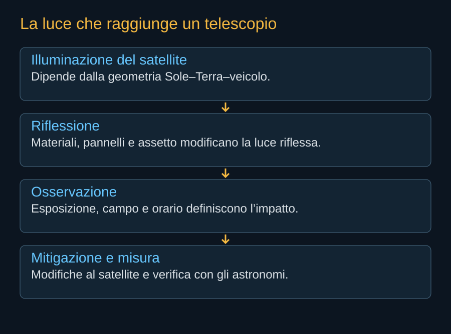

Un satellite alimentato dal Sole può essere illuminato mentre il terreno sottostante è al buio. La luce riflessa può entrare nelle immagini di un telescopio e produrre tracce, saturazione o altri effetti difficili da correggere. La presenza di grandi superfici rende importante studiare la luminosità di Starmind, ma non permette di ricavarla dalla sola apertura dichiarata.

La geometria della luce
La quantità di luce che raggiunge un osservatore dipende da posizione del Sole, satellite e telescopio, oltre a materiali e orientamento. Una superficie può diffondere o concentrare la riflessione. Un lampo speculare può essere molto diverso dalla luminosità media. La quota cambia distanza, visibilità e durata dell’illuminazione.
Non possediamo qui un modello pubblico completo delle superfici AI1 che permetta di assegnare una magnitudine credibile. I rendering non sono misure fotometriche. Anche una superficie apparentemente scura può avere comportamenti differenti nelle bande utilizzate dagli strumenti scientifici. Per questo il libro non pubblica un numero di luminosità inventato.


La traccia non è soltanto una riga da cancellare
Il software può identificare parte delle tracce, ma l’informazione scientifica coperta può essere perduta. Una sorgente molto luminosa può coinvolgere zone più ampie del sensore attraverso saturazione ed effetti elettronici. Cambiare l’orario può aiutare per alcune osservazioni; un fenomeno transitorio non aspetta necessariamente una finestra senza satelliti.
Il costo comprende tempo degli strumenti, elaborazione e riduzione della qualità. Può distribuirsi su molti osservatori e su programmi differenti. Una misura favorevole su un singolo telescopio non esaurisce il problema. Vanno inclusi strumenti ad ampio campo, osservazioni in bande differenti e attività che cercano fenomeni molto deboli.

La contestazione dell’AAS
Il 6 marzo 2026 l’American Astronomical Society presentò una petizione alla FCC contro la domanda dei data center orbitali. La petizione documenta un’opposizione della comunità astronomica e richiama interferenze e questioni di valutazione. Non è una decisione della Commissione e non attribuisce a una flotta inesistente un impatto già misurato.
Il contrasto riguarda anche la scala. Le mitigazioni sviluppate per costellazioni precedenti possono aiutare, ma grandi superfici e orbite differenti richiedono nuove osservazioni. Un cambiamento di assetto che riduce la luce riflessa potrebbe influire su energia e termica. La mitigazione deve essere incorporata nel progetto e verificata insieme alle altre prestazioni.
Che cosa osservare nei dimostratori
Le prime missioni potrebbero produrre dati su luminosità, variazioni e dipendenza dall’assetto. Informazioni precise sulle traiettorie aiuterebbero a pianificare campagne coordinate. La misura dovrebbe includere condizioni favorevoli e sfavorevoli, evitando di scegliere soltanto gli incontri nei quali il satellite appare poco visibile.
Il cielo costituisce una risorsa per chi studia il pianeta e per chi vive sotto di esso. Riconoscere il valore della nuova infrastruttura non elimina questo valore esistente. Il lavoro utile consiste nel confrontare benefici, mitigazioni e perdite con dati pubblici, prima che un numero molto grande di veicoli renda difficile correggere il progetto.
Fonti pubbliche e tracce
- American Astronomical Society, petizione alla FCC. 6 marzo 2026. Obiezioni scientifiche e regolatorie; petizione di una parte, non divieto già emanato.
- Secure World Foundation, commenti alla domanda SpaceX. 6 marzo 2026. Posizione del partecipante all’istruttoria su rischi cumulativi, trasparenza e autorizzazioni per fasi, non decisione FCC.
- ESA, Space Environment Report 2026. Pubblicazione del 14 settembre 2026, quadro basato sui dati fino a fine 2025. Le proposte future non sono satelliti già presenti.
- SpaceX, Starmind e scheda AI1. Consultata il 10 ottobre 2026. Fonte aziendale per la scheda corrente e gli obiettivi Gigasat; non rapporto di prove in volo.